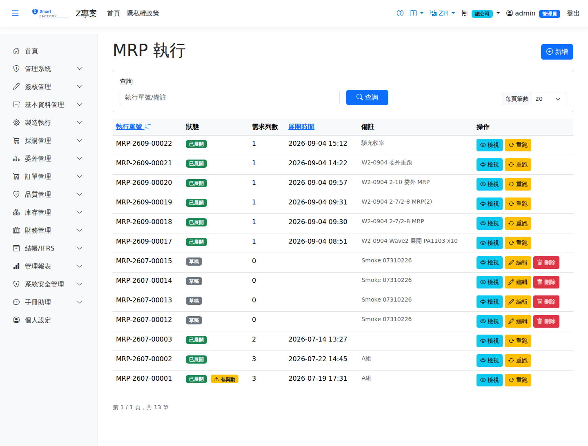
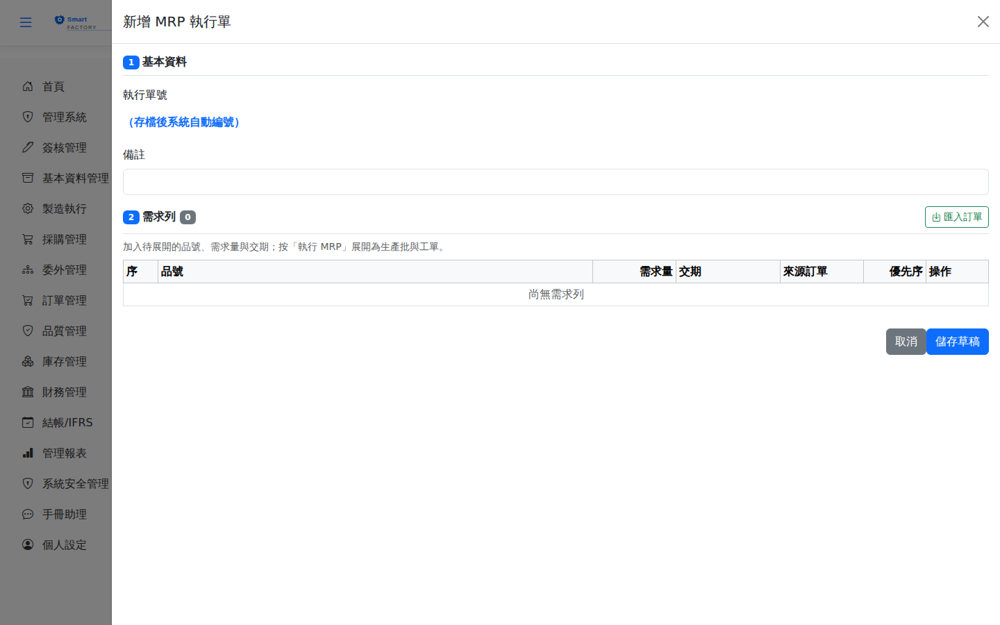
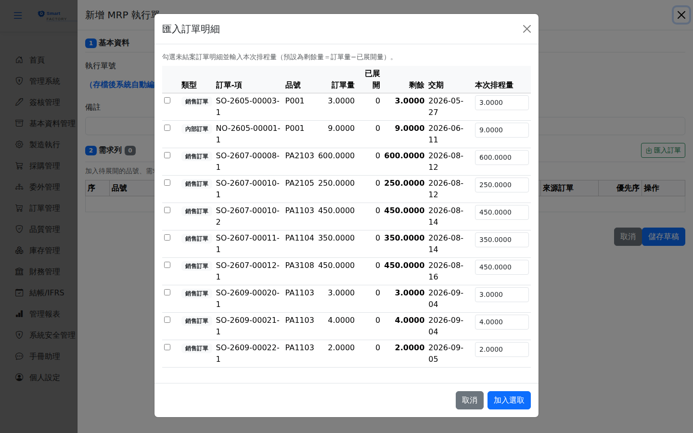
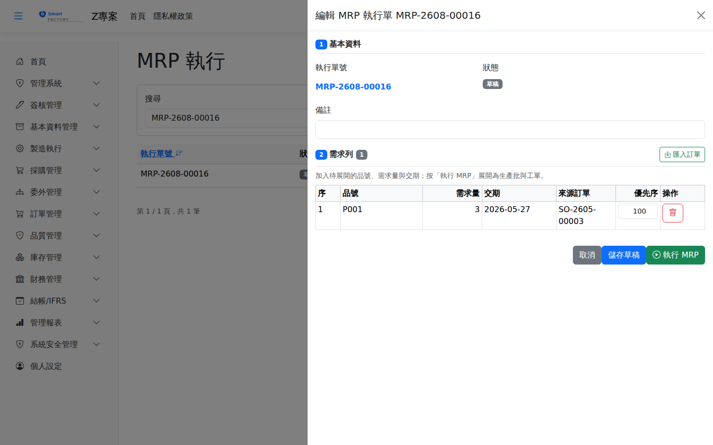
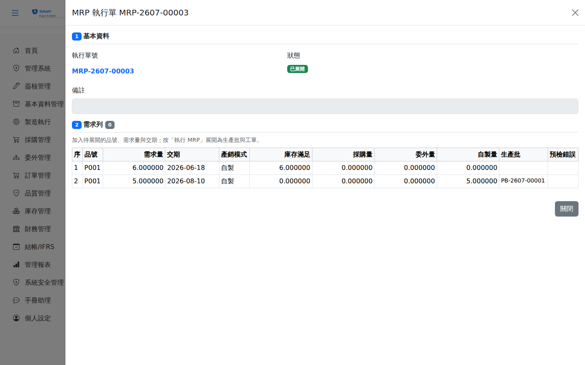

MRP 依訂單需求、現有庫存、在途量與產品 MRP 模式（自製/外購/委外）展開，產生工單、請購建議或委外採購單建議，並依工作日曆與途程前置期倒推各階開工日。批量政策由系統參數控制（逐批 LotForLot 或最小批量/倍量 MinMultiple）。料況不足時工單會標示「待料風險」（在途 PO/委外預計到貨日 ≤ 計畫開工日仍可排程，甘特圖以黃色標記）。MRP explodes demand from sales orders against on-hand stock, in-transit quantities and each product's MRP mode (make / buy / outsource) to produce work orders, purchase requisition suggestions or outsource purchase order suggestions, back-scheduling the start date of every level from the work calendar and the routing lead time. The lot-sizing policy is controlled by a system parameter (lot-for-lot, or minimum / multiple lot size). When material is short the work order is flagged "material risk" (it can still be scheduled if the expected arrival of the in-transit PO or outsource order is on or before the planned start date, and is marked yellow on the Gantt chart).

MRP 執行畫面截圖（示意，實際欄位/資料依權限與查詢條件而異）MRP run screenshot (illustrative; actual fields and data vary by permission and query criteria)
查詢Search
1查詢列的「執行單號/備註」輸入關鍵字後點「查詢」；「執行單號」與「展開時間」欄位標題可點擊排序，清單下方有分頁導航。Type a keyword into "Run No. / Remarks" in the search bar and click "Search"; the "Run No." and "Expanded At" column headers can be clicked to sort, and page navigation sits below the list.
2「狀態」欄顯示「草稿」或「已展開」。草稿可編輯或刪除；已展開的執行單不能再修改，「操作」欄只剩檢視（眼睛圖示）與「重跑」。The "Status" column shows "Draft" or "Executed". A draft can be edited or deleted; an executed run can no longer be modified — the "Actions" column only offers view (the eye icon) and "Re-run".
作業流程Process
建立執行單Create a run
1點「新增」開啟側欄。執行單號於存檔後由系統自動編號，備註可留空。Click "Add" to open the side panel. The run number is assigned automatically on save, and remarks may be left blank.

新增 MRP 執行單：需求列還是空的，底部只有「取消」與「儲存草稿」——「執行 MRP」要存檔後重新開啟才會出現A new MRP run: the demand lines are still empty and the footer only offers "Cancel" and "Save Draft" — "Execute MRP" appears only after the draft is saved and reopened
2點「匯入訂單」開啟明細視窗，勾選未結案的訂單明細並輸入本次排程量（預設為剩餘量＝訂單量−已展開量），再點「加入選取」帶進需求列。Click "Import Orders" to open the picker, tick the open order lines and enter the quantity to plan this time (which defaults to the remaining quantity = order quantity − quantity already exploded), then click "Add Selected" to bring them into the demand lines.

匯入訂單明細：銷售訂單與內部訂單都會列出，「本次排程量」可逐列調整Importing order lines: both sales orders and internal orders are listed, and the quantity to plan can be adjusted line by line
3點「儲存草稿」。草稿仍可反覆修改需求列，也可以先存檔、之後再回來補。Click "Save Draft". The demand lines of a draft can still be changed as often as needed, so it is fine to save first and come back later.
執行展開Run the explosion
1於列表點該草稿「操作」欄的鉛筆圖示重新開啟側欄，確認需求列無誤後點「執行 MRP」。系統會再確認一次：展開後此執行單將無法再修改。Click the pencil icon in the "Actions" column of that draft to reopen the panel, check the demand lines and then click "Execute MRP". The system asks for confirmation once more: the run can no longer be edited after it is exploded.

重新開啟的草稿：需求列已帶出來源訂單，底部多出綠色的「執行 MRP」A reopened draft: the demand line carries its source order, and the green "Execute MRP" button is now in the footer
2系統依料況展開，建立生產批、工單與派工；需外購的部分會自動建立一張請購單。The system explodes against the material situation and creates production batches, work orders and dispatches; whatever has to be bought in is raised as a purchase requisition automatically.
結果解讀Reading the results
1展開完成的訊息會列出生產批、工單、派工的筆數與「預計延遲的生產批」；自動建立的請購單可於「請購轉採購」批次轉為採購單。The completion message lists how many production batches, work orders and dispatches were created plus the "production batches predicted to be late"; the requisition that was raised automatically can be turned into purchase orders in bulk under "PR to PO".
2於列表點「操作」欄的眼睛圖示可看展開結果明細：每列的產銷模式、庫存滿足量、採購量、委外量、自製量與對應生產批；「預檢錯誤」欄會標出展開時發現的問題。The eye icon in the "Actions" column shows the expansion result in detail: the make/buy mode, the quantity covered from stock, the purchased, outsourced and in-house quantities and the matching production batch for every line; the "Pre-check errors" column flags problems found during the explosion.

展開結果明細：同一品號兩列分別由庫存滿足與新開生產批滿足Expansion result detail: two lines of the same product, one covered from stock and one by a newly created production batch
3每筆需求列顯示來源訂單（pegging 1:1），可追溯至銷售訂單。Every demand line shows its source order (1:1 pegging) and can be traced back to the sales order.
4「MRP 達成率」報表可事後檢核建議與實際落實的差異。The "MRP Attainment" report lets you review afterwards how far the suggestions were actually acted on.
庫存滿足量怎麼算How the quantity covered from stock is worked out
展開結果的「庫存滿足量」不等於庫存餘額表上的數字。系統實際可以拿來扣抵需求的量是：The "covered from stock" figure in the expansion result is not the number on the inventory balance report. What the system may actually use to cover demand is:
可取用量 = max( 可用庫存 + 已核准 PO 在途 + 進貨待上架 − 出貨待下架 − 安全庫存 , 0 )usable = max( available stock + in-transit approved POs + goods awaiting put-away − shipments awaiting picking − safety stock , 0 )
| 項目Term | 說明Guide |
|---|
| 安全庫存Safety stock | 產品主檔的安全庫存會先被扣掉，MRP 不會動用它。所以帳上明明有量卻仍開出請購／工單是正常的——差額通常就是這一段The product master's safety stock is deducted first; MRP never draws on it. Seeing a requisition or work order raised while stock appears to be on hand is therefore normal — the gap is usually exactly this |
| 已核准 PO 在途In-transit approved POs | 只認已核准、未結案、且交期在需求日之前（含當日）的採購單未交量。草稿或待審的 PO、交期晚於需求日的 PO 都不算Counts only the undelivered quantity of purchase orders that are approved, still open, and due on or before the required date. Draft or pending POs, and POs due later than the required date, do not count |
| 進貨待上架 / 出貨待下架Awaiting put-away / awaiting picking | 只在完整模式生效：貨已進廠但還沒上架時庫存尚未增加，故加回；已確認出貨但還沒下架時庫存尚未減少，故扣除。簡化模式核准即過帳，庫存已即時反映，不做這兩項調整Full mode only. Goods received but not yet put away have not increased stock, so they are added back; shipments confirmed but not yet picked have not decreased it, so they are deducted. In simplified mode approval posts immediately, stock is already up to date, and neither adjustment is made |
同一次展開中同一品號被多階需求共用時，在途與待上架的量只會被認領一次，不會重複扣抵。取用順序固定為在手庫存 → PO 在途 → 進貨待上架，且在手那一段本身也不得低於安全庫存。Where several levels of one explosion need the same item, in-transit and awaiting-put-away quantities are claimed only once and never counted twice. They are drawn in a fixed order — on-hand, then in-transit POs, then goods awaiting put-away — and the on-hand portion alone may not fall below safety stock either.
用料需求量的小數位（2026-07 起）Decimals of the material demand quantity (from 2026-07)
1展開子階用料時，需求量＝上階數量 × 單位用量 ×（1 ＋ 下角率% ＋ 損耗率%），此式可能算出小數（例：105 × 1.05 ＝ 110.25）。When a lower level is exploded, demand = parent quantity × usage per unit × (1 + offcut rate% + scrap rate%), which can produce a decimal (e.g. 105 × 1.05 = 110.25).
2系統會依該料The system uses the material's 計量單位的小數位無條件進位rounded up to the decimals of the unit of measure：PCS 為 0 位 → 110.25 進位為: PCS has 0 decimals, so 110.25 rounds up to 111；若單位允許 4 位小數則保留 110.25。計量單位主檔查無該單位時維持原值不進位。; if the unit allows 4 decimals, 110.25 is kept as it is. If the unit is not found in the unit-of-measure master the value is kept unchanged, without rounding up.
3只影響之後新展開的工單，only affects work orders exploded after that, 既有工單的需求量不會被追溯修改the demand quantity of existing work orders is not changed retroactively；舊工單要改用新口徑需重跑 MRP。可於; an older work order has to have MRP re-run to move onto the new basis. You can check under 工單用料狀況WO Material Status 檢視實際需求量與缺料差額。Review the actual demand and the shortfall.
已開啟「製造簡化模式」的工廠：Plants with "Simplified Manufacturing Mode" switched on:不需要來這裡人工建單——訂單核准時系統會自動建立
MRP 執行單、立即展開，並接著把工單自動投產。存檔後的提示訊息會告訴您產生的執行單號。
系統只補「還沒展開的量」，同一張訂單重複存檔不會重複展開。
自動展開失敗時提示訊息會說明原因，該張執行單會留在 do not need to create a run here by hand — approving a sales order automatically creates an
MRP run, explodes it immediately and then releases the work orders. The message shown after saving tells you the run number that was created.
The system only covers the quantity that has not been exploded yet, so saving the same order again does not explode it twice.
If the automatic run fails the message explains why and the run stays in 草稿Draft狀態，可在本畫面查看並人工執行。
此設定由系統管理員於 status, which can be viewed here and carried out by hand.
The setting is maintained by the system administrator under 系統參數System Parameters 開關。switch.
欄位說明Field reference
查詢條件Query criteria
| 條件Condition | 說明Guide |
|---|
| 查詢Search | 執行單號或備註的模糊比對Partial match on the run number or the notes |
執行單欄位Run fields
| 欄位Field | 說明Guide |
|---|
| 執行單號Run No. | 系統採番，每次展開一張，可回溯本次展開的完整結果Numbered by the system, one per run, so the full result of that run can be traced |
| 狀態Status | 展開作業的進度（草稿／已展開／已關閉）Progress of the run (draft / exploded / closed) |
| 需求列數Lines | 本次納入展開的需求筆數Number of demand lines included in this run |
| 展開時間Executed At | 實際執行展開運算的時間戳Timestamp when the explosion actually ran |
| 備註Notes | 本次展開的補充說明Notes for this run |
展開結果明細Explosion result detail
| 欄位Field | 說明Guide |
|---|
| 品號 / 需求量 / 交期Item / Demand qty / Due date | 本階需求的料件、數量與需求日Item, quantity and demand date required at this level |
| 產銷模式MRP Mode | 該品號的取得方式：自製（Make）／外購（Buy）／委外（Outsource），取自產品主檔How the item is obtained: make, buy or outsource, taken from the product master |
| 庫存滿足Stock | 可由現有庫存與在途量直接滿足的數量，不再產生新需求Quantity that can be met straight from existing stock and in-transit quantities, so no new demand is created |
| 採購量 / 委外量 / 自製量Purchase qty / Outsource qty / Make qty | 扣除庫存滿足後，分別要轉為請購單、委外採購單、工單的數量After netting off stock, the quantities to be turned into purchase requisitions, outsource purchase orders and work orders |
| 生產批Production batch | 自製量歸屬的生產批號，投產時以生產批為單位整批放行Batch the make quantity belongs to; work is released a whole batch at a time |
| 預檢錯誤Pre-check Error | 展開前的資料檢核問題（缺途程、缺料表、缺前置天數等）；有錯誤者不產生後續單據，須先補齊主檔Data problems found before the explosion (missing routing, missing BOM, missing lead days …); nothing downstream is created while there are errors, so the master data has to be completed first |
需求來源Demand source
| 欄位Field | 說明Guide |
|---|
| 來源訂單Sales Order | 產生此需求的銷貨訂單／預測Sales order or forecast that produced this demand |
| 優先序Priority | 需求的排程優先順序，數字越小越優先Scheduling priority of the demand; the lower the number, the higher the priority |
| 訂單量 / 已展開 / 剩餘Order qty / Exploded / Remaining | 該來源的總量、已被先前展開消化的量、本次仍待展開的剩餘量。以「剩餘量」判定故重跑具冪等性The total quantity of the source, how much earlier runs have already consumed and how much is still to be exploded. Because the decision is made on the remaining quantity, re-running is idempotent |
| 本次排程量This Run Qty | 本次展開實際納入計算的數量Quantity actually taken into the calculation by this run |
工單查詢Work Orders、訂單變更決策Order Change Decision、MRP 達成率MRP attainment、工單用料狀況WO Material Status、系統參數System Parameters
注意：Note:訂單數量變更時：未投產的工單由系統自動釋放殘留預留並以新量重跑；已投產者進入「訂單變更決策」清單由人工判斷。 When the order quantity changes: work orders not yet released have their residual reservations released automatically and are re-run at the new quantity; released ones go into the "Order Change Decisions" list for someone to decide.